Find a speaker
Search by name or topic, or browse by category. Do not see who you want? Name any speaker and we will approach them for you.
128 speakers

Navtej Sarna
Former Indian Ambassador to the United States · Author
Navtej Sarna is a distinguished diplomat, acclaimed author, and former Indian Ambassador to the United States (2016–2018). A member of the Indian Foreign Service from 1980, he also served as India’s High Commissioner to the UK, Ambassador to Israel, and Secretary in the Ministry of External Affairs. He was India’s longest-serving official spokesperson for the Ministry of External Affairs. An award-winning writer, his novel Crimson Spring received the Sahitya Akademi Award (2025) and the KLF Best Fiction Award (2022). Sarna has authored several acclaimed novels, non-fiction works, translations, and continues to write extensively on foreign policy, history, and literature.
View profile →
Dr. Shashi Tharoor
Member of Parliament, Thiruvananthapuram · Author · Former UN Under-Secretary-General
Shashi Tharoor is an Indian politician, bestselling author, and former international diplomat. A former Under-Secretary-General of the United Nations, he served the organisation for nearly three decades before entering public life in India. Since 2009, he has represented Thiruvananthapuram in Parliament and has held key ministerial portfolios, including External Affairs and Human Resource Development. A prolific writer, Tharoor has authored more than 25 books on history, politics, diplomacy, and culture. Renowned for his eloquence and global perspective, he is a sought-after speaker on international affairs, democracy, leadership, and India’s evolving role on the world stage.
View profile →
Montek Singh Ahluwalia
Former Deputy Chairman, Planning Commission of India · Economist · Public Policy Expert
Montek Singh Ahluwalia is one of India’s most respected economists and public policy leaders. A key architect of India’s economic reforms, he served as Deputy Chairman of the Planning Commission of India from 2004 to 2014 and has held senior positions at the Ministry of Finance, the Prime Minister’s Office, and the World Bank. Over a career spanning more than four decades, he has played a pivotal role in shaping India’s fiscal, economic, and development policies. A distinguished author and thought leader, Ahluwalia continues to contribute to global conversations on economic growth, governance, public policy, and sustainable development.
View profile →
Raghav Chadha
Member of Parliament (Rajya Sabha) · Chartered Accountant · National Leader, Aam Aadmi Party
Raghav Chadha is a Member of Parliament in the Rajya Sabha and one of India’s prominent young political leaders. A Chartered Accountant by profession, he entered public life through the Aam Aadmi Party and has held key responsibilities in governance and public policy. He has served as Vice Chairman of the Delhi Jal Board and has been actively involved in legislative discussions on finance, infrastructure, education, and governance reforms. Known for his articulate public speaking and policy-driven approach, Chadha is a regular participant in national and international forums on leadership, public administration, economic development, and the future of democratic governance.
View profile →
Uday Sodhi
Digital Transformation Leader
Uday Sodhi, former head of SonyLIV and a respected digital strategist, brings deep expertise in OTT, content innovation and consumer engagement. As a speaker, he shares insights on digital disruption, product scaling, leadership and the future of media. His practical perspectives empower organisations navigating rapid technological and audience shifts.
View profile →
Shiv Shivakumar
Corporate Leader & Author
Shiv Shivakumar, a celebrated business leader and bestselling author, has led major organisations including PepsiCo and Aditya Birla Group. A renowned speaker, he shares powerful lessons on leadership, strategy, career growth and navigating disruption. His clear frameworks and practical wisdom equip audiences to make smarter decisions and excel professionally.
View profile →
Rajendran Dandapani
CTO, Zoho Schools of Learning
Rajendran Dandapani is a veteran technologist and an influential voice at Zoho, championing education, design thinking and product innovation. As a speaker, he bridges technology with human values, inspiring audiences to rethink learning, creativity and digital responsibility. His engaging style motivates teams to build meaningful, user-focused solutions.
View profile →
Harish Bijoor
Brand & Marketing Strategist
Harish Bijoor is a leading brand expert and founder of Harish Bijoor Consults Inc., advising global and Indian companies. His talks decode consumer behaviour, brand building, market shifts and customer engagement. With sharp insights and relatable examples, he helps organisations understand markets deeply and craft future-ready strategies.
View profile →Harish Bhat
Marketer · Keynote Speaker · Bestselling Author · Corporate Advisor · Director at the Tata Group
Harish Bhat, a marketer, corporate advisor, bestselling author and Director at the Tata Group, is admired for his storytelling and marketing leadership. His sessions explore branding, curiosity-driven creativity, consumer insight and building trusted businesses. He inspires audiences to innovate thoughtfully, communicate authentically and create long-lasting brand impact.
View profile →
R. Gopalakrishnan
Former Tata Executive & Leadership Thinker
R. Gopalakrishnan, former director of Tata Sons and a respected leadership author, brings decades of boardroom experience across global companies. His talks focus on decision-making, culture, wisdom, organisational growth and lifelong learning. His reflective, experience-rich insights help leaders develop perspective, maturity and purpose in fast-changing business environments.
View profile →Yamini Bhat
Co-founder & CEO, Vymo
Yamini Bhat is the co-founder and CEO of Vymo, a leading AI-driven sales productivity platform. A Stanford alum and strategic thinker, she speaks on digital transformation, scaling SaaS companies, customer-centric innovation and women leadership. Her clarity, insight and experience make her a compelling voice for technology and business audiences.
View profile →
Aman Gupta
Co-founder & CMO, boAt
Aman Gupta, co-founder and CMO of boAt, is one of India’s most influential entrepreneurs and a Shark Tank India favourite. Known for disruptive marketing and brand-building, he speaks on consumer insights, scaling businesses, creative leadership and founder resilience. His energetic style inspires teams and entrepreneurs to think boldly and innovate fearlessly.
View profile →
Vineeta Singh
Co-founder & CEO, Sugar Cosmetics
Vineeta Singh, CEO and co-founder of Sugar Cosmetics, is celebrated for her grit, bold decisions and consumer-brand innovation. A Shark Tank India judge, she speaks on entrepreneurship, women leadership, disciplined execution and building modern Indian brands. Her inspiring journey motivates audiences to embrace ambition with resilience and confidence.
View profile →
Dr. A. Velumani
Founder, Thyrocare
Dr. A. Velumani, founder of Thyrocare, built one of India’s largest diagnostic networks with remarkable frugality and vision. His talks offer powerful lessons on entrepreneurship, risk-taking, value creation and converting adversity into opportunity. His straightforward storytelling and lived experience inspire audiences to think long-term and lead with discipline.
View profile →
Chetna Sinha
Social Entrepreneur & Founder, Mann Deshi Foundation
Chetna Sinha is a pioneering social entrepreneur empowering rural women through financial inclusion and entrepreneurship. Founder of the Mann Deshi Foundation and a global policy influencer, she speaks on grassroots leadership, women empowerment, innovation and community transformation. Her impactful journey inspires audiences to build inclusive, purpose-driven change.
View profile →
Nitin Saluja
Founder & CEO, Chaayos
Nitin Saluja, founder of Chaayos, reimagined India’s tea culture through technology, personalization and brand innovation. As a speaker, he offers insights on product experimentation, customer obsession and scaling Indian consumer brands. His practical entrepreneurial wisdom resonates with founders, business leaders and teams seeking sustainable, creative growth.
View profile →
Parul Gulati
Actor, Entrepreneur & Founder, Nish Hair
Parul Gulati is an actor-turned-entrepreneur and founder of Nish Hair, a fast-growing beauty and hair solutions brand. She speaks on building modern D2C businesses, personal branding, women entrepreneurship and embracing authenticity. Her relatable journey inspires young creators and founders to pursue independence, confidence and bold ideas.
View profile →Radhika Gupta
MD & CEO, Edelweiss Mutual Fund
Radhika Gupta, MD & CEO of Edelweiss Mutual Fund, is a respected finance leader and bestselling author. Known for her clarity and authenticity, she speaks on leadership, overcoming self-doubt, investing, career resilience and building confidence. Her articulate storytelling inspires professionals to grow with purpose, courage and consistent effort.
View profile →
Samir Saran
President, ORF & Global Affairs Expert
Samir Saran, President of the Observer Research Foundation, is a leading global voice on geopolitics, technology, climate policy and India’s strategic future. A sought-after speaker at major international forums, he provides sharp analysis and visionary perspectives. His sessions empower leaders to navigate global change with clarity and insight.
View profile →Varun Singh Rathore
Managing Partner, FMCG Advisory · Former National Business Leader · Food & Beverages Industry Expert
Varun Singh Rathore is a seasoned FMCG and Food & Beverages leader with over 19 years of experience driving growth, transformation, and profitability across India’s consumer goods sector. Having led national businesses with full P&L responsibility, he brings deep expertise in brand building, route-to-market strategy, commercial execution, pricing, distribution, and new product commercialization. His experience spans beverages, packaged foods, energy drinks, and value-added nutrition categories. Varun also advises private equity firms, venture capital investors, consulting firms, and institutional investors on market dynamics, consumer trends, commercial due diligence, and growth opportunities within India’s rapidly evolving FMCG landscape.
View profile →
Jonty Rhodes
Legendary Cricketer & High-Performance Coach
Jonty Rhodes, one of cricket’s greatest fielders, is celebrated for redefining athleticism and commitment. As an international coach and motivational speaker, he inspires audiences with lessons on excellence, teamwork, discipline, and sustained performance. His insightful sessions energise professionals, leaders, and students seeking peak productivity and a winning mindset.
View profile →
V.V.S. Laxman
Cricket Icon & Mentor
V.V.S. Laxman, renowned for his elegant batting and match-winning temperament, is a respected cricketing statesman and coach. His talks explore leadership under pressure, discipline, preparation, and navigating challenges with calm focus. Laxman’s deep insights and humility make him a powerful speaker for corporate, academic, and sports events.
View profile →Sunil Chhetri
Indian Football Captain & Youth Inspiration
Sunil Chhetri, India’s most celebrated footballer and long-serving national captain, inspires millions with his discipline, humility, and relentless work ethic. As a speaker, he shares lessons on leadership, perseverance, fitness, and goal-driven living. His journey empowers audiences to push limits and pursue excellence with determination.
View profile →
Anil Kumble
Former India Captain & Leadership Speaker
Anil Kumble, legendary bowler and former Indian cricket captain, is admired for his integrity, resilience, and strategic brilliance. His talks offer powerful lessons on leadership, handling pressure, team building, and long-term success. His calm, analytical approach resonates strongly with corporate audiences and aspiring leaders.
View profile →
Prakash Padukone
Badminton Pioneer & Mentor
Prakash Padukone, India’s first global badminton champion, is a visionary who transformed Indian sport. His speaking sessions highlight discipline, focus, humility, and leadership rooted in values. As an academy founder and mentor, he inspires individuals to commit to excellence and pursue growth with patience and consistent effort.
View profile →Sania Mirza
Tennis Champion & Women Empowerment Speaker
Sania Mirza, one of India’s greatest tennis players, is celebrated globally for her achievements and resilience. As a speaker, she addresses confidence, overcoming societal barriers, mental strength, and championing women’s voices. Her inspiring journey motivates audiences to challenge norms and pursue dreams with courage and self-belief.
View profile →Mithali Raj
Cricket Legend & Leadership Role Model
Mithali Raj, India’s most accomplished women’s cricketer and former national captain, is a symbol of discipline, determination, and excellence. Her talks explore leadership, gender equality in sports, and staying motivated through adversity. She inspires audiences to dream fearlessly and lead with purpose and grace.
View profile →
Deepa Malik
Paralympian & Motivational Force
Deepa Malik, India’s first female Paralympic medalist, is a celebrated speaker on resilience, courage, and redefining limitations. Her extraordinary journey, from overcoming paralysis to earning global sporting honours, empowers audiences to embrace challenges with strength. Her talks deeply resonate across corporate, youth, and inclusion-focused platforms.
View profile →
Pullela Gopichand
Coach, Visionary & Leadership Architect
Pullela Gopichand, former All-England champion and India’s most influential badminton coach, has shaped multiple world-class athletes. His sessions focus on discipline, preparation, values-based leadership, and building winning systems. Gopichand’s insights inspire organisations to nurture talent, embrace consistency, and create high-performance cultures.
View profile →
Brett Lee
Fast Bowling Legend & Global Speaker
Brett Lee, one of world cricket’s fastest bowlers, is admired for his sportsmanship, passion, and sustained excellence. As a speaker, he shares powerful lessons on teamwork, pressure management, global collaboration, and maintaining peak performance. His charismatic presence makes him a memorable addition to international events.
View profile →
Saina Nehwal
Champion Shuttler & Youth Icon
Saina Nehwal, Olympic medalist and world badminton champion, inspires millions through her dedication and resilience. Her talks focus on achieving goals, handling setbacks, mental strength, and building a champion’s mindset. She connects strongly with young audiences, encouraging them to work hard and dream boldly.
View profile →
Harbhajan Singh
Cricket Star & Motivational Speaker
Harbhajan Singh, one of India’s most successful bowlers, is known for his fighting spirit, passion, and match-winning performances. As a speaker, he shares insights on handling pressure, teamwork, overcoming criticism, and staying committed to excellence. His candid, engaging style makes him a favourite at corporate and youth events.
View profile →
Harsha Bhogle
Cricket Commentator & Sports Broadcaster
Harsha Bhogle is one of cricket’s most respected commentators and presenters, known for his insightful analysis and articulate storytelling. With decades of global broadcasting experience, he brings deep game knowledge, communication excellence, and leadership lessons from sport, making him a sought-after moderator and speaker at business and leadership forums.
View profile →
Sunil Gavaskar
Cricket Legend, Leadership Thinker & Sports Commentator
Sunil Gavaskar is a pioneering figure in Indian cricket and a respected voice on leadership, integrity, and consistency. His talks blend decades of on-field experience with sharp insights on decision-making, resilience, and ethical leadership, making him a compelling speaker for senior leadership and strategy-focused audiences.
View profile →
Manika Batra
International Table Tennis Champion & Youth Inspiration Speaker
Manika Batra is India’s leading table tennis star who has redefined the country’s presence on the global stage. As a speaker, she shares her journey of breaking barriers, mental toughness, and competing fearlessly at international level, resonating strongly with youth, women professionals, and high-performance teams.
View profile →
Lt. Gen. D.S. Hooda (Retd.)
Former Northern Army Commander
Lt. Gen. D.S. Hooda, former Northern Army Commander, is respected for strategic brilliance and leading critical operations. As a speaker, he shares insights on national security, leadership under pressure, crisis management and nation-building. His clarity, humility and deep experience inspire audiences to lead with responsibility, discipline and purpose.
View profile →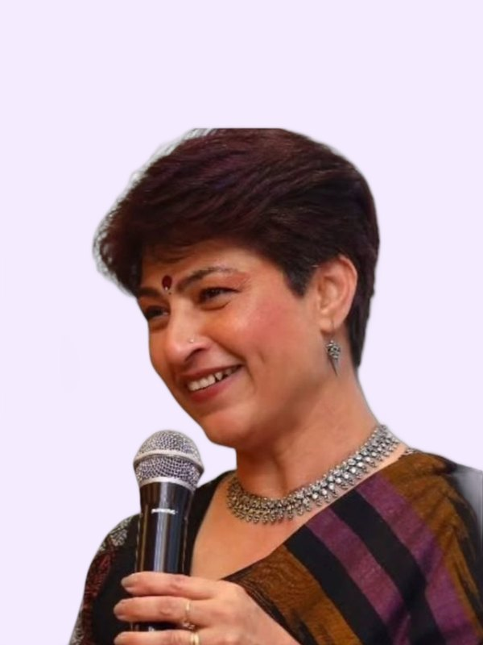
Captain Yashika Tyagi
Inspirational Defence Speaker
Captain Yashika Tyagi, a trailblazing former Army officer, is celebrated for her courage and leadership. She speaks on women empowerment, battlefield decision-making, resilience and breaking stereotypes. Her powerful storytelling and lived experiences inspire audiences to embrace strength, confidence and fearlessness in challenging environments.
View profile →
Major D.P. Singh
Kargil Veteran & Blade Runner
Major D.P. Singh, a Kargil War veteran and India’s first blade runner, is a symbol of courage and extraordinary resilience. His sessions highlight grit, rehabilitation, mindset transformation and overcoming adversity. His journey from battlefield injury to marathon champion motivates audiences to rise above limitations and lead with unwavering determination.
View profile →
Captain Yogendra Singh Yadav
Param Vir Chakra Awardee
Captain Yogendra Singh Yadav, India’s youngest Param Vir Chakra recipient, is revered for his unmatched bravery during the Kargil War. His talks offer profound lessons on courage, sacrifice, patriotism and staying mission-focused under extreme adversity. His presence inspires audiences to embody fearlessness, loyalty and commitment to duty.
View profile →Major Vandana Sharma
Veteran & Leadership Mentor
Major Vandana Sharma, a distinguished Army veteran, is known for her leadership, discipline and advocacy for women in uniform. As a speaker, she addresses resilience, organisational excellence, transitions, and leading with integrity. Her journey empowers audiences to build confidence, embrace responsibility and develop strong, values-driven leadership.
View profile →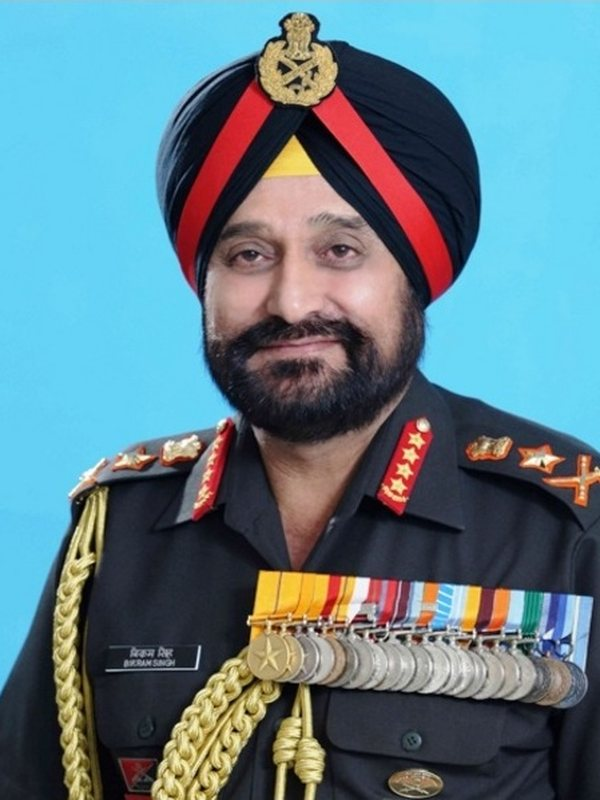
General Bikram Singh (Retd.)
Former Chief of Army Staff
General Bikram Singh, former Chief of the Indian Army, brings unparalleled experience in national security, strategic affairs and global military diplomacy. His keynotes highlight leadership, accountability, crisis strategy and building high-trust teams. His authoritative perspective inspires organisations and leaders to excel with discipline, ethics and long-term vision.
View profile →Major Gaurav Arya (Retd.)
Defence Analyst & Speaker
Major Gaurav Arya, a former Army officer and prominent defence analyst, speaks passionately about national security, leadership, patriotism and India’s strategic challenges. His insights combine frontline experience with geopolitical understanding. Engaging and relatable, he inspires audiences to think critically, value discipline and contribute meaningfully to national growth.
View profile →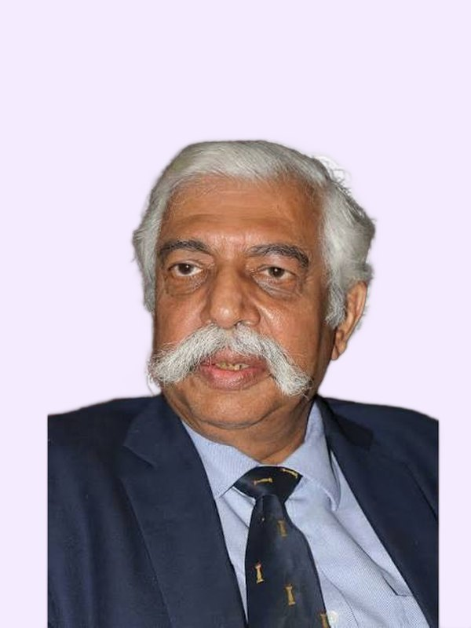
General G.D. Bakshi (Retd.)
War Veteran & Strategic Expert
General G.D. Bakshi, a decorated Army veteran and defence strategist, is known for his deep knowledge of warfare, counter-terror operations and national security. His talks deliver powerful insights on leadership, security challenges and nation-building. His energetic presence motivates audiences to adopt courage, preparedness and strategic thinking.
View profile →Colonel Lalit Rai (Retd.)
Vir Chakra Awardee
Colonel Lalit Rai, Vir Chakra awardee, is celebrated for his heroic leadership during the Kargil War. His sessions centre on battlefield courage, decision-making under pressure, team spirit and honour. His inspiring journey teaches audiences the value of discipline, integrity and leading from the front in every situation.
View profile →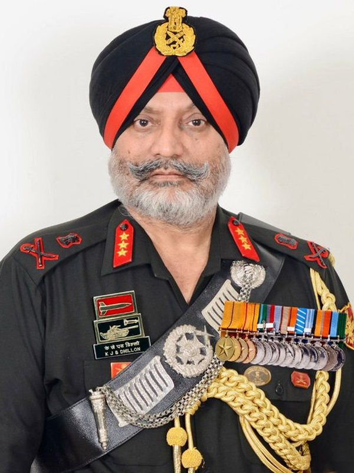
Lt. Gen. K.J.S. Dhillon (Retd.)
Former Corps Commander & Motivational Leader
Lt. Gen. K.J.S. Dhillon, widely known as “Dropadi,” is a highly respected senior Army commander known for counter-terror expertise and compassionate leadership. His talks focus on nation-building, crisis management, youth motivation and value-based leadership. His authenticity and experience inspire audiences to serve with humility, courage and commitment.
View profile →
Ashwin Sanghi
Bestselling Author & Storytelling Speaker
Ashwin Sanghi is one of India’s most successful authors, renowned for mythological and historical thrillers blending research with compelling narratives. As a speaker, he explores creativity, Indian history, writing discipline, and entrepreneurial resilience. His engaging sessions inspire audiences to think deeper, challenge assumptions, and find powerful stories within complex ideas.
View profile →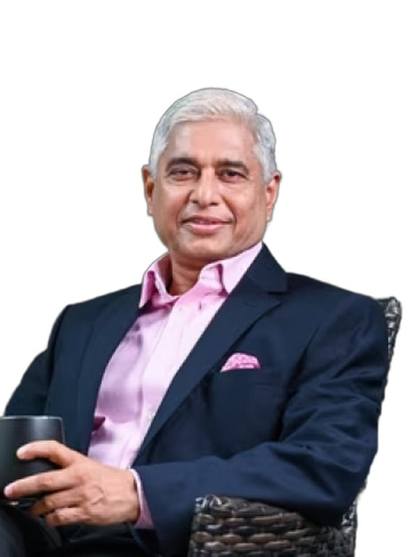
Vikas Swarup
Diplomat & Acclaimed Author
Vikas Swarup, celebrated author of Q&A the novel behind Slumdog Millionaire is an accomplished diplomat and global thinker. His talks weave storytelling, world affairs, cultural understanding, and creativity. With unique experiences across continents, he inspires audiences to broaden perspectives, embrace curiosity, and appreciate the power of narratives in shaping global society.
View profile →Anand Neelakantan
Mythology Author & Cultural Speaker
Anand Neelakantan, bestselling author of Asura, Baahubali series, and other retellings, brings fresh perspectives to Indian epics through unheard voices. As a speaker, he discusses mythology, storytelling, identity, and interpretation. His thought-provoking sessions encourage audiences to question traditional narratives and appreciate the richness of India’s cultural imagination.
View profile →
Amish Tripathi
Author & Cultural Ambassador
Amish Tripathi, bestselling author of the Shiva Trilogy and Ram Chandra Series, is known for bringing Indian mythology to modern readers with depth and accessibility. His talks explore culture, spirituality, leadership, and India’s civilisational strengths. Amish’s articulate storytelling inspires audiences to rediscover heritage and embrace personal and professional growth.
View profile →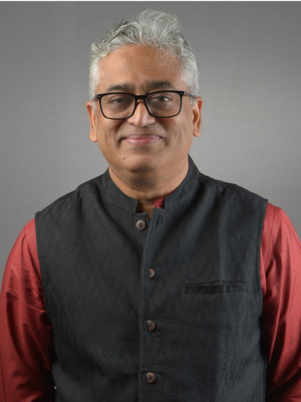
Rajdeep Sardesai
Journalist, Author & Public Affairs Speaker
Rajdeep Sardesai is a leading journalist and bestselling author known for his incisive analysis of Indian politics, media, and democracy. As a speaker, he offers sharp insights, historical context, and balanced perspectives on current affairs. His sessions spark meaningful conversations, making him a sought-after voice at corporate and academic events.
View profile →Sudha Menon
Author, Coach & Women Leadership Speaker
Sudha Menon is a bestselling author, columnist, and leadership coach who inspires audiences with powerful stories on women empowerment, personal growth, and finding authentic voice. Her workshops and talks focus on mindfulness, communication, and inclusive leadership. She helps individuals discover courage, creativity, and purpose in their professional and personal journeys.
View profile →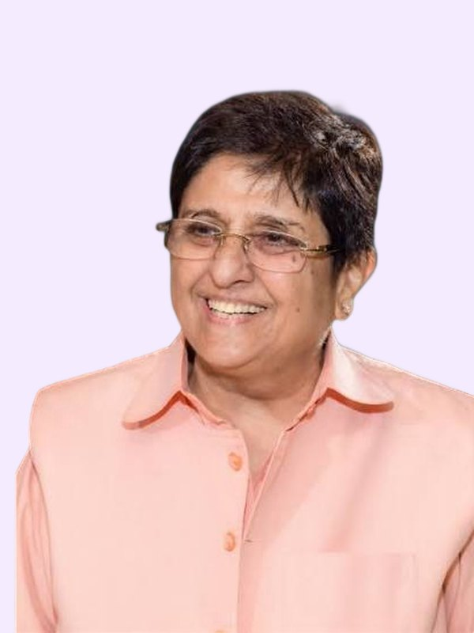
Dr. Kiran Bedi
Former IPS Officer & Leadership Speaker
Dr. Kiran Bedi, India’s first female IPS officer and a globally recognised reformer, is celebrated for her transformational leadership and social impact. As a speaker, she shares lessons on courage, discipline, integrity, and public service. Her dynamic presence inspires audiences to lead with conviction and create meaningful, lasting change.
View profile →Dr. Seema Anand
Mythology Researcher & Feminine Wellbeing Speaker
Dr. Seema Anand is a renowned mythologist, storyteller, and expert on feminine wellbeing, relationships, and heritage. Her talks blend ancient wisdom with modern perspectives, empowering audiences to understand intimacy, identity, and cultural narratives. She brings elegance, clarity, and depth to conversations on personal empowerment and timeless Indian traditions.
View profile →Chetan Bhagat
Author, Columnist & Youth Motivator
Chetan Bhagat, India’s bestselling contemporary author and influential columnist, connects strongly with young audiences through relatable storytelling and practical life lessons. As a speaker, he addresses ambition, career growth, self-belief, and navigating modern challenges. His energetic, humorous, and insightful sessions make him a popular choice for corporate and youth events.
View profile →Devdutt Pattanaik
Mythologist, Author & Leadership Thinker
Devdutt Pattanaik is a leading mythologist and bestselling author known for decoding Indian mythology to understand business, leadership, culture, and human behaviour. His talks offer unique frameworks for decision-making, creativity, and organisational wisdom. With rich storytelling and fresh insights, he helps audiences view challenges through timeless mythological lenses.
View profile →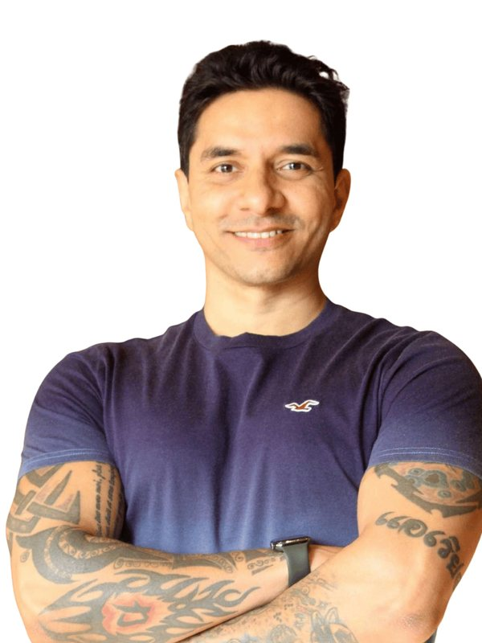
Luke Coutinho
Holistic Wellness Coach & Author
Luke Coutinho is a globally recognised holistic wellness expert specializing in integrative nutrition, lifestyle medicine and disease prevention. As a speaker, he empowers audiences with practical strategies for sustainable health, emotional balance, immunity and mindful living. His science-backed yet compassionate approach inspires people to take charge of their wellbeing.
View profile →
Dr. Pradeep Chowbey
Pioneer in Minimal Access Surgery
Dr. Pradeep Chowbey is a world-renowned surgeon and pioneer in minimal access and bariatric surgery. A Padma awardee and global educator, he speaks on medical innovation, preventive health, surgical excellence and patient-centric care. His decades of clinical leadership inspire audiences to embrace innovation, discipline and compassionate healthcare delivery.
View profile →
Anand Damani
Behavioural Scientist & Innovation Strategist
Anand Damani is a behavioural science expert helping organisations rethink decision-making, user psychology and human-centred innovation. As a speaker, he reveals how behavioural insights shape habits, communication and product design. His practical frameworks empower leaders and teams to influence behaviour ethically and solve complex problems with clarity and creativity.
View profile →Yasmin Karachiwala
Celebrity Fitness Trainer & Pilates Expert
Yasmin Karachiwala, India’s leading Pilates expert and trainer to top celebrities, is known for redefining functional fitness for modern lifestyles. Her talks focus on movement science, discipline, body awareness and building sustainable, personalised fitness habits. She inspires audiences to prioritise health through mindful movement and consistent, informed training.
View profile →Rujuta Diwekar
Nutritionist & Bestselling Author
Rujuta Diwekar is one of India’s most influential nutritionists, renowned for simplifying traditional eating and promoting sustainable, local food habits. As a speaker, she discusses metabolic health, women’s wellness, mindful eating and the science behind India’s food wisdom. Her relatable, research-driven approach helps audiences build long-term, balanced lifestyles.
View profile →Milind Soman
Endurance Athlete, Wellness Icon & Longevity Advocate
Milind Soman is one of India’s most respected voices on fitness, discipline, and active ageing. An Ironman triathlete and endurance athlete, he speaks on building lifelong vitality through movement, mental resilience, and consistency. His sessions inspire audiences to rethink ageing, embrace physical challenges, and adopt sustainable wellness habits for long-term health.
View profile →
Dr. Aditi Nerurkar
Physician, Stress & Longevity Specialist
Dr. Aditi Nerurkar is a Harvard-trained physician and wellbeing expert specialising in stress, burnout prevention, and long-term health. As a speaker, she translates medical science into practical strategies for resilience, sustainable performance, and healthy ageing, helping individuals and leaders protect both productivity and wellbeing in high-pressure environments.
View profile →Deanna Panday
Fitness Coach & Lifestyle Wellness Speaker
Deanna Panday is a fitness coach and wellness speaker who focuses on building strength, balance, and confidence through everyday movement. Her talks centre on habit-building, body positivity, and integrating fitness into modern lifestyles, making wellness accessible, realistic, and sustainable for long-term health.
View profile →
Namrata Purohit
Pilates Expert & Movement for Longevity Specialist
Namrata Purohit is a leading Pilates trainer and movement specialist who speaks on posture, injury prevention, and functional fitness for longevity. Combining science-backed techniques with mindful movement, her sessions help audiences understand how intelligent training supports long-term mobility, core strength, and overall wellbeing.
View profile →Ira Trivedi
Author, Wellness Speaker & Mindful Living Advocate
Ira Trivedi is a wellness speaker and author who addresses holistic wellbeing, mindful living, and self-care in today’s fast-paced world. Her talks encourage audiences to reconnect with their physical and mental health, cultivate balance, and adopt conscious lifestyle practices that support sustained wellbeing and quality of life.
View profile →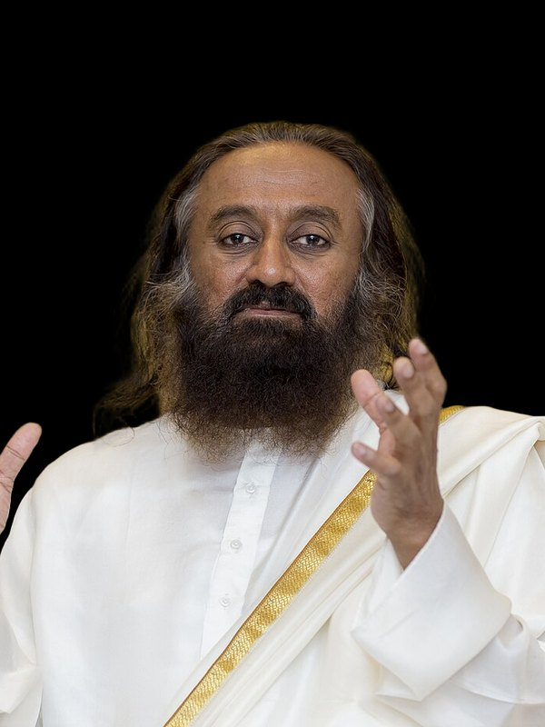
Sri Sri Ravi Shankar
Global Spiritual Leader & Peace Ambassador
Sri Sri Ravi Shankar is a globally respected spiritual leader known for integrating ancient wisdom with modern wellbeing. His talks focus on stress management, emotional resilience, and inner peace in high-pressure environments. He brings clarity on leadership through mindfulness and compassion. Widely welcomed across corporate, government, and international platforms.
View profile →
Gaur Gopal Das
Spiritual Mentor & Mindfulness Storyteller
Gaur Gopal Das connects timeless spiritual wisdom with everyday personal and professional challenges. Known for his relatable storytelling and warmth, he speaks on purpose, relationships, and emotional balance. His sessions resonate strongly with youth and corporate audiences alike. He simplifies complex ideas into practical life lessons.
View profile →
Swami Mukundananda
Spiritual Leader & Mind Management Expert
Swami Mukundananda blends spiritual philosophy with scientific thinking and leadership principles. He speaks on mind control, stress reduction, and purposeful living. His sessions translate ancient wisdom into tools for productivity and clarity. Especially relevant for leadership and performance-driven audiences.
View profile →
Swami Narasimhananda
Vedanta Teacher & Consciousness Thinker
Swami Narasimhananda is known for his clear, rational interpretation of Vedanta. His talks focus on self-awareness, inner freedom, and conscious living beyond dogma. He appeals strongly to intellectual and academic audiences. His sessions encourage reflection, clarity, and depth of thought.
View profile →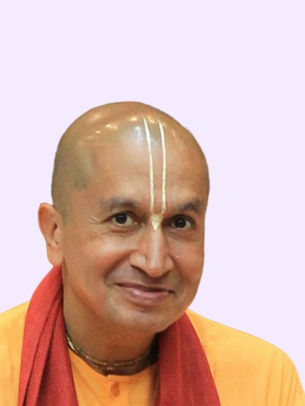
Swami Gaurangadas
Monk, Educator & Leadership Speaker
Swami Gaurangadas speaks on values-based leadership, ethics, and purpose-driven living. Drawing from spiritual philosophy and modern organisational life, he offers practical insights for leaders. His sessions balance discipline with compassion. Widely appreciated in educational and leadership forums.
View profile →
Jaya Kishori
Spiritual Orator & Youth Inspiration Voice
Jaya Kishori is known for presenting spiritual teachings in a contemporary, relatable style. She speaks on faith, inner strength, and emotional resilience, especially resonating with younger audiences. Her sessions inspire positivity and grounded confidence. She bridges tradition with modern life experiences.
View profile →
Boman Irani
Actor & Inspirational Speaker
Boman Irani is an acclaimed Indian actor known for his powerful performances and inspiring personal journey. A natural storyteller, he brings humour, depth, and life lessons to every stage. His sessions motivate audiences with insights on resilience, creativity, reinvention, and embracing challenges with optimism.
View profile →
Anupam Kher
Actor, Author & Motivational Speaker
Anupam Kher is an internationally respected actor and bestselling author, celebrated for his lifelong commitment to performance and personal transformation. As a global motivational speaker, he shares uplifting insights on courage, discipline, failure, and reinvention. His sessions energise audiences and inspire them to pursue excellence with determination.
View profile →
Gul Panag
Actor, Entrepreneur & Policy Advocate
Gul Panag is an actor, pilot, entrepreneur, and public-policy advocate known for her dynamic leadership and multifaceted achievements. She speaks compellingly about women empowerment, fitness, governance, and personal development. With her sharp insights and grounded presence, she inspires audiences to lead purposeful, driven, and socially conscious lives.
View profile →
Mandira Bedi
Actor, Host & Fitness Icon
Mandira Bedi is a celebrated actor, television host, and fitness personality known for her discipline and breaking stereotypes. She delivers impactful talks on wellness, mental strength, reinvention, and overcoming personal challenges. Her inspiring journey makes her a powerful speaker for corporate, wellness, and women-leadership events.
View profile →
Suniel Shetty
Actor, Entrepreneur & Philanthropist
Suniel Shetty is a respected actor, entrepreneur, and philanthropist who brings authenticity and leadership to every conversation. He speaks passionately about fitness, entrepreneurship, discipline, and building a meaningful life. His real-world experience and grounded wisdom make him a compelling presence at corporate, youth, and motivational events.
View profile →
Farhan Akhtar
Actor, Filmmaker & Creative Entrepreneur
Farhan Akhtar’s career spans filmmaking, acting, music, and entrepreneurship. He speaks on creativity, leadership, reinvention, and balancing multiple pursuits. Farhan’s journey reflects discipline, purpose, and adaptability. His conversations appeal to leadership, creative, and youth-driven audiences alike.
View profile →
Vikrant Massey
Actor & Youth Inspiration
Vikrant Massey is an acclaimed actor known for his versatile performances and thoughtful approach to storytelling. A grounded speaker, he connects deeply with young audiences, discussing creativity, authenticity, hard work, and navigating the ever-evolving entertainment industry. His inspiring journey makes him ideal for youth and creative-industry events.
View profile →Manoj Bajpayee
National Award-Winning Actor
Manoj Bajpayee is one of India’s most respected actors, known for his transformative roles and dedication to craft. His journey from small-town beginnings to national acclaim offers profound lessons in perseverance, purpose, and excellence. His keynote sessions inspire audiences to pursue passion relentlessly and push creative boundaries fearlessly.
View profile →
Rhea Chakraborty
Actor, Youth & Wellness Speaker
Rhea Chakraborty is an actor and youth-inspiration voice who speaks openly about resilience, mental health, and rebuilding life after adversity. Her candid, empathetic storytelling encourages audiences to embrace healing, courage, and self-growth. She connects deeply with young people, making her an impactful speaker for wellness, empowerment, and transformational events.
View profile →
Tisca Chopra
Actor, Author & Creative Leader
Tisca Chopra is an acclaimed actor, author, and storyteller known for her thoughtful perspectives on creativity, leadership, and personal reinvention. A dynamic speaker, she engages audiences with insights from film, writing, and life experiences. Her articulate, inspiring presence makes her ideal for corporate, cultural, and women-leadership events.
View profile →
Neha Dupia
Actor, Producer & Advocate for Women’s Voices
Neha Dhupia brings candid perspectives shaped by her work across film, media, and entrepreneurship. She speaks on women in leadership, self-belief, and balancing ambition with personal identity. Known for her forthright opinions, Neha encourages open dialogue on confidence, choice, and growth. Her sessions resonate strongly with professional women and leadership forums.
View profile →Dia Mirza
Actor, Producer & Sustainability Advocate
Dia Mirza is widely respected for her work in cinema and environmental advocacy. Her conversations focus on purpose-driven leadership, sustainability, wellbeing, and responsible influence. Dia brings empathy and thoughtfulness to discussions around impact and long-term thinking. She is especially relevant for organisations prioritising ESG, culture, and conscious leadership.
View profile →
Zoya Akhtar
Filmmaker & Storyteller of Contemporary India
Zoya Akhtar is an acclaimed filmmaker known for building nuanced, inclusive narratives. She speaks on creativity, leadership, collaboration, and managing diverse teams in high-performance environments. Her insights bridge storytelling with organisational culture and innovation. Zoya’s sessions appeal to leaders navigating complexity and creative decision-making.
View profile →Rajkummar Rao
Actor Known for Craft, Discipline & Grit
Rajkummar Rao’s journey is rooted in perseverance, discipline, and mastery of craft. He speaks about consistency, humility, and long-term growth in competitive environments. His story resonates with audiences navigating early struggles and sustained performance. Rajkummar offers grounded motivation through lived experience rather than abstraction.
View profile →Vivek Oberoi
Actor, Entrepreneur & Impact Investor
Vivek Oberoi bridges the worlds of entertainment, entrepreneurship, and social impact. He speaks on reinvention, conscious business, and aligning purpose with profit. Drawing from his diverse ventures, Vivek shares lessons on adaptability and long-term thinking. His sessions suit leadership, startup, and innovation-driven audiences.
View profile →
Chitrangada Singh
Actor & Voice of Individuality
Chitrangada Singh is known for her distinctive choices and quiet confidence. She speaks on resilience, self-expression, and embracing individuality in both personal and professional life. Her conversations encourage authenticity without conformity. Chitrangada resonates strongly with audiences seeking balance between strength and sensitivity.
View profile →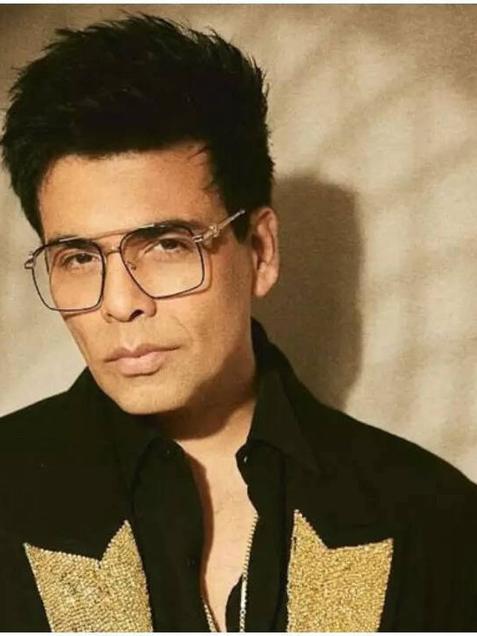
Karan Johar
Filmmaker, Producer & Cultural Influencer
Karan Johar is one of India’s most influential creative voices. He speaks on leadership, creativity, brand-building, and navigating public scrutiny. Drawing from decades in media and entrepreneurship, Karan offers insights into relevance, reinvention, and storytelling at scale. His sessions are impactful for leadership and brand-focused audiences.
View profile →Karisma Kapoor
Actor & Icon of Reinvention
Karisma Kapoor’s career reflects longevity, adaptability, and evolution. She speaks on reinvention, sustaining relevance, and embracing change across life stages. Her journey offers lessons in resilience and self-renewal. Karisma connects deeply with audiences navigating transitions and growth.
View profile →
Rahul Bose
Actor, Athlete & Social Advocate
Rahul Bose brings a unique blend of cinema, sport, and social consciousness. He speaks on discipline, leadership, equality, and purpose-driven living. Drawing from endurance sports and activism, Rahul’s conversations are direct and thought-provoking. He is well-suited for leadership and impact-led forums.
View profile →
Rannvijay Singh Singa
Youth Icon & Leadership Communicator
Rannvijay Singha is known for his strong connect with young professionals and emerging leaders. He speaks on teamwork, resilience, decision-making, and growth through challenge. His style is energetic yet grounded in real experience. Rannvijay is highly effective for youth, campus, and mid-level leadership audiences.
View profile →
Sonali Bendre
Actor, Author & Resilience Advocate
Sonali Bendre brings authenticity and emotional depth shaped by personal experience. She speaks on resilience, mental wellbeing, and navigating adversity with grace. Her conversations foster empathy, courage, and strength. Sonali’s sessions are especially impactful for wellbeing and women-centric initiatives.
View profile →Imtiaz Ali
Filmmaker & Explorer of Inner Purpose
Imtiaz Ali is known for stories rooted in self-discovery and emotional truth. He speaks on creativity, purpose, and navigating inner journeys in professional life. His conversations blend philosophy with storytelling. Imtiaz resonates with audiences seeking meaning, reflection, and depth.
View profile →
Sharan Hegde
Finance Creator & Entrepreneur
Sharan Hegde, founder of finance platform Finance With Sharan, simplifies money management for millions through humour and relatable content. His talks focus on financial literacy, behaviour change, smart decision-making and creator-led entrepreneurship. He empowers audiences to take control of their financial journeys with clarity, confidence and practical strategies.
View profile →
Raj Shamani
Entrepreneur, Creator & Speaker
Raj Shamani is a top business creator, podcaster and entrepreneur inspiring young India with insights on money, entrepreneurship and personal branding. His sessions highlight self-belief, market trends, digital opportunities and building influence with purpose. His energetic, relatable storytelling motivates audiences to learn boldly and pursue disruptive ideas fearlessly.
View profile →
Neha Nagar
Finance Influencer & Entrepreneur
Neha Nagar is a popular finance creator simplifying taxes, investing and money concepts for young India. As a speaker, she addresses financial independence, digital entrepreneurship, money mindset and women empowerment. Her relatable, practical approach inspires audiences to become financially aware, responsible and confident in managing their personal finances.
View profile →Anushka Rathod
Finance Creator & Educator
Anushka Rathod, a fast-growing finance creator, is known for making complex financial topics easy, engaging and actionable. Her talks cover saving, investing, smart spending, economic awareness and building credibility online. She empowers young professionals and students to make informed financial choices and develop lifelong money confidence.
View profile →Ruhee Dosani
Global Creator & Cultural Storyteller
Ruhee Dosani, known for her high-energy content and global dance collaborations, is a creator who celebrates diversity and community. As a speaker, she shares insights on authenticity, cross-cultural creativity, digital collaboration and building joyful online spaces. Her vibrant personality inspires audiences to embrace individuality and create fearlessly.
View profile →Ranveer Allahbadia
Entrepreneur, Podcaster & Self-Growth Content Creator
Ranveer Allahbadia is the founder of BeerBiceps and host of The Ranveer Show, one of India’s most popular podcasts. Known for his content on entrepreneurship, mental fitness, spirituality, leadership, and personal growth, he has interviewed global leaders, business icons, athletes, and spiritual masters. Ranveer inspires millions of young Indians to build disciplined habits, long-term thinking, and purpose-driven careers.
View profile →
Kusha Kapila
Digital Creator, Actor & Culture Commentator
Kusha Kapila is a leading digital creator and actor known for her sharp observational humor, relatable characters, and commentary on modern Indian life. Rising to prominence through social media, she has since transitioned into films, OTT shows, and major brand collaborations. Her work often explores identity, confidence, relationships, and evolving gender roles with wit and authenticity.
View profile →
Prajakta Koli
Actor, YouTuber & Youth Icon
Prajakta Koli, widely known as MostlySane, is one of India’s most influential digital creators and actors. Starting with relatable comedy sketches, she has grown into a global youth voice, acting in films and Netflix series while also serving as a UNDP Youth Climate Champion. Prajakta speaks on self-expression, mental health, resilience, and using digital platforms for positive impact.
View profile →
Suhani Shah
Mentalist & Illusionist
Suhani Shah, India’s leading mentalist, blends psychology, intuition and storytelling to create unforgettable experiences. As a speaker-performer, she explores perception, confidence, communication and the science of human behaviour. Her engaging sessions inspire audiences to think differently, challenge assumptions and tap into their hidden potential with curiosity and clarity.
View profile →Gurleen Singh
Stand-Up Comedian & Observational Humorist
Gurleen Singh is a sharp-witted stand-up comedian known for relatable observational humor and quick crowd work. Blending everyday situations with fresh perspectives, Gurleen delivers high-energy performances that connect instantly with audiences. From corporate events to live stages, Gurleen brings laughter, authenticity, and a memorable comedic voice that leaves audiences wanting more.
View profile →
Naman Anand
Comedian & Digital Creator
Naman Anand is a rising comedian and content creator known for his sharp wit, relatable humor and modern perspectives on everyday life. As a speaker-performer, he brings authenticity, creativity and fresh insight into youth culture, digital storytelling and creative careers. His engaging style resonates strongly with young, high-energy audiences.
View profile →
Abhishek Upmanyu
Stand-Up Comedian & Writer
Abhishek Upmanyu, one of India’s most popular stand-up comedians, is known for his quick delivery, sharp observations and memorable stage presence. As a speaker-performer, he brings humour, authenticity and cultural insight to every audience. His sessions spark laughter while offering witty perspectives on modern life, creativity and communication.
View profile →
Rahul Subramanian
Stand-Up Comedian & Corporate Satirist
Rahul Subramanian is a top stand-up comedian celebrated for his clever corporate humour, improvisation and relatable storytelling. As a speaker-performer, he offers unique perspectives on workplaces, communication and navigating modern professional life. His intelligent comedy connects instantly with corporate audiences seeking high-energy entertainment and sharp observational humour.
View profile →
Rahul Dua
Comedian, Host & Entertainment Personality
Rahul Dua is a popular comedian and one of India’s most versatile entertainers, known for his charismatic stage presence and effortless humour. As a speaker-performer, he blends wit, storytelling and audience interaction to deliver memorable experiences. His engaging personality makes him a favourite for youth-centric and corporate events.
View profile →
Kanan Gill
Comedian, Writer & Storyteller
Kanan Gill is an acclaimed comedian and writer known for his intelligent humour, thoughtful observations and creative storytelling. As a speaker-performer, he explores creativity, self-expression, navigating modern pressures and finding one’s voice. His calm yet comedic style resonates widely, making him ideal for corporate, college and creative-industry audiences.
View profile →
Vir Das
Emmy-winning Comedian & Actor
Vir Das is a globally acclaimed comedian, actor and International Emmy winner known for his sharp writing, global perspective and boundary-pushing performances. As a speaker-performer, he discusses creativity, identity, comedy as social commentary and building international careers. His unique voice inspires audiences to think boldly and embrace originality.
View profile →Zakir Khan
Comedian, Storyteller & Cultural Voice
Zakir Khan, one of India’s most beloved comedians, is celebrated for his heartfelt storytelling, poetic humour and deep relatability. As a speaker-performer, he shares insights on authenticity, resilience, creative journeys and connecting emotionally through humour. His warm presence inspires audiences to embrace vulnerability, simplicity and meaningful expression.
View profile →
Anubhav Singh Bassi
Comedian & Youth Icon
Bassi is a breakout comedy star known for his hilarious, nostalgia-driven storytelling and effortless stage charisma. As a speaker-performer, he brings humour, relatability and insights on self-discovery, career twists and embracing life’s unpredictability. His engaging style makes him a top choice for youth festivals and corporate events.
View profile →
Atul Khatri
Corporate Comedy Specialist & Observational Humorist
Atul Khatri is one of India’s most trusted comedians for corporate audiences. With sharp observational humor rooted in office life, family, and everyday experiences, he delivers clean, intelligent comedy that resonates across age groups. His polished, professional style makes him a favourite for leadership events and large corporate gatherings.
View profile →Amit Tandon
Clean Comedy Expert & Relatable Storyteller
Amit Tandon is widely known as “the married guy” of Indian comedy, bringing clean, relatable humor drawn from family life and workplace realities. His comedy connects effortlessly with diverse audiences, making him an excellent choice for corporates seeking inclusive, feel-good entertainment without edgy content.
View profile →
Akash Gupta
High-Energy Storyteller & Youth Icon
Akash Gupta is a popular stand-up comedian known for his energetic performances and animated storytelling. His humor rooted in personal experiences, ambition, and modern work-life culture appeals strongly to young professionals and millennial audiences, making him ideal for dynamic corporate celebrations and employee engagement events.
View profile →
Gaurav Gupta
Character Comedy Specialist & Observational Performer
Gaurav Gupta is best known for his hilarious character-based comedy, especially his iconic portrayals inspired by Indian family dynamics. His clean, situational humor works exceptionally well for corporates, creating high recall and laughter without crossing comfort boundaries.
View profile →Prashasti Singh
Sharp Observational Comic & Contemporary Voice
Prashasti Singh is a bold, intelligent comedian known for her sharp takes on modern life, workplace culture, and social dynamics. Her confident stage presence and witty storytelling make her a strong fit for progressive corporate audiences seeking fresh, contemporary humor.
View profile →Biswa Kalyan Rath
Intellectual Humorist & Story-Driven Performer
Biswa Kalyan Rath is known for his clever, introspective comedy that blends logic, life experiences, and observational humor. His structured storytelling and sharp punchlines appeal particularly to thinking audiences, making him a great choice for corporates looking for smart, engaging entertainment.
View profile →
Johnson Ebenezer
Culinary Innovator & Hospitality Leader
Chef Johnson is a celebrated culinary expert known for his creative approach to regional Indian flavours and modern presentation. As a speaker, he shares insights on food innovation, kitchen leadership, sustainability and the evolving dining culture. His warm storytelling inspires audiences to appreciate craftsmanship, discipline and passion in the culinary arts.
View profile →
Chef Manuel Olveria
Global Cuisine Specialist
Chef Manuel is an accomplished chef recognised for his mastery of international cuisines and refined culinary techniques. His sessions explore creativity, flavour balance, menu design and global food trends. As a speaker, he brings rich cross-cultural perspectives, motivating audiences to experiment boldly and elevate their culinary understanding.
View profile →
Chef Ranveer Brar
Celebrity Chef, Author & Culinary Explorer
Chef Ranveer Brar, one of India’s most loved chefs, is known for his television shows, restaurants and passionate storytelling about food heritage. As a speaker, he discusses creativity, culture, entrepreneurship and India’s culinary identity. His engaging presence inspires audiences to celebrate flavours, explore roots and build meaningful connections through food.
View profile →
Chef Guntas Sethi
Pastry Artist & Food Educator
Chef Guntas Sethi is a renowned pastry chef celebrated for her elegant desserts and modern baking techniques. She speaks on creativity, innovation in patisserie, ingredient science and building culinary confidence. Her approachable style and artistic expertise inspire young chefs, home bakers and professionals to embrace precision and imagination.
View profile →
Chef Garima Arora
Michelin-Starred Chef & Culinary Visionary
Chef Garima Arora, India’s first Michelin-starred female chef, is globally recognised for her progressive Indian cuisine and bold, thoughtful flavours. As a speaker, she highlights culinary innovation, leadership, sustainability and reimagining tradition. Her journey empowers audiences to break barriers, pursue excellence and celebrate India’s gastronomic diversity.
View profile →Chef Himanshu Saini
Modern Indian Cuisine Pioneer
Chef Himanshu Saini, the creative force behind Trèsind and winner of global acclaim, is known for redefining modern Indian gastronomy. His talks focus on innovation, technique, storytelling through food and elevating traditional flavours with modern artistry. His visionary approach inspires chefs and food lovers to push culinary boundaries courageously.
View profile →
Sanjeev Kapoor
Culinary Icon & Global Ambassador of Indian Cuisine
Sanjeev Kapoor is one of India’s most celebrated chefs, best known for hosting Khana Khazana, one of the longest-running cooking shows globally. A Padma Shri awardee, restaurateur, author, and entrepreneur, he has significantly influenced modern Indian cooking and brought Indian cuisine to international audiences.
View profile →
Kunal Kapoor
Celebrity Chef & Culinary Innovator
Kunal Kapur is a renowned Indian chef, restaurateur, and television personality, widely recognised as a judge on MasterChef India. Known for blending traditional flavors with contemporary techniques, he is an author and entrepreneur passionate about reviving regional Indian cuisines and mentoring aspiring chefs nationwide.
View profile →
Sanjyot Keer
Digital Culinary Creator & Modern Indian Food Expert
Sanjyot Keer is a popular chef and digital food content creator known for his innovative, easy-to-follow recipes. As the face behind Your Food Lab, he has transformed home cooking through engaging video content, making gourmet techniques accessible to millions across social media platforms.
View profile →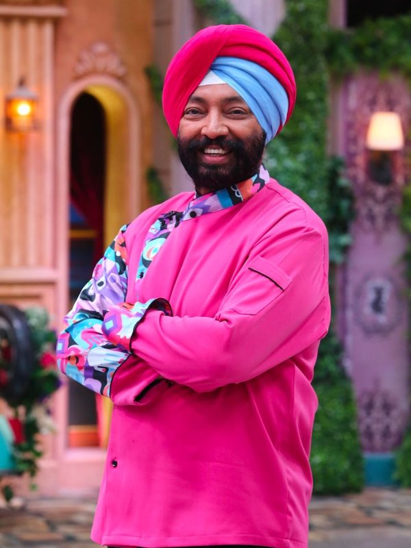
Harpal Singh Sokhi
Celebrity Chef & Champion of Indian Flavours
Harpal Singh Sokhi is a vibrant chef and television personality known for his energetic style and deep love for Indian cuisine. Famous for his signature phrase “Namak Shamak,” he promotes regional Indian flavors through restaurants, cookbooks, and culinary shows worldwide.
View profile →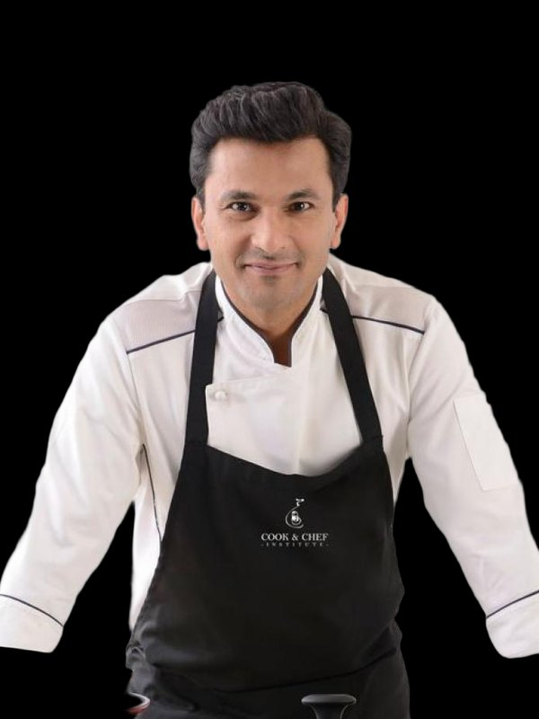
Vikas Khanna
Michelin-Star Chef & Global Humanitarian
Vikas Khanna is an internationally acclaimed Michelin-starred chef, author, filmmaker, and humanitarian. Based in New York, he has elevated Indian cuisine globally while actively contributing to social causes. A MasterChef India judge, he is known for blending culinary artistry with culture, compassion, and storytelling.
View profile →No speakers match that search. Tell us who you have in mind and we will approach them for you.
Have someone else in mind?
Name the speaker you want, even if they are not listed here, and we will approach them for you.